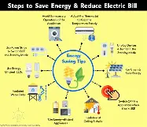

Tips To Save Energy
- Seal Gaps and Cracks in windows
- Upgrade Home Insulation
- Optimize Heating and cooling
- Dry laundry outside during hot weather

Saving Energy At Home
Approximately 25% of our overall energy use is in the home. Learn ways to reduce both your heating and electricity use.
Home appliances
To keep your use of electricity as low as possible, you should know which appliances use the most electricity. Be smart about when and how often you use them. A good rule of thumb is: if it makes things hot, then it uses a lot of electricity. For example, electric showers, kettles, and hair dryers.